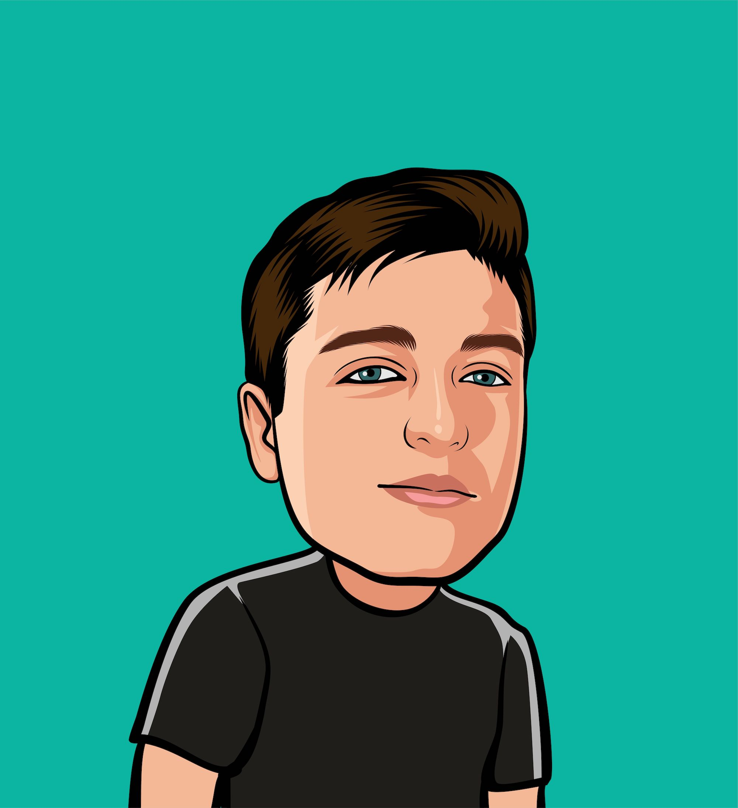

Research & Quantitative Business Methods
Algebra, calculus, financial mathematics, probability and statistics — for business decisions
MBA03 · ESE MBA · Term 1, A.Y. 2026–2027 European School of Economics, Florence · in person · 30 contact hours over the term
Weeks 1–5 Niccolò Salvini, PhD, in person · weeks 6–10 Vincenzo Nardelli, PhD, online · module leader Arianna Ziliotto
Everything for the module is on this page. One row per session: the slide deck, the drills done on paper in class (solutions included), and the homework you bring to the next one. Materials are published by the day after each session.
Sessions
| # | Date | Theme | Materials | Homework |
|---|---|---|---|---|
| 1 | Thu 24 Sep | Revision of mathematics — equations, systems, quadratics, logs and exponentials, absolute values · diagnostic | slides · drills · code ↗ | HW1 |
| 2 | Thu 1 Oct | Midterm guidelines briefing · functions and the Cartesian plane, limits, differentiation, integration | slides · drills · code ↗ | HW2 |
| 3 | Thu 8 Oct | Calculus continued — full study of a function, optimisation, integration · in-class quiz | slides · drills · code ↗ | HW3 |
| 4 | Thu 15 Oct | Financial mathematics I — simple and compound interest, discounting, EAR, annuities and perpetuities, NPV | slides · drills · code ↗ | HW4 |
| 5 | Thu 22 Oct | Financial mathematics II — bond pricing, duration and convexity · consolidation · mock of the final’s calculus question | slides · drills · code ↗ · mock exam | HW5 |
| — | 26–30 Oct | Reading week — no class · midterm paper due Sun 1 Nov, 23:59 on Turnitin | — | — |
| 6 | w/c 2 Nov | Midterm oral presentations · financial mathematics — Vincenzo Nardelli, PhD from here on, online | — | — |
| 7 | w/c 9 Nov | Midterm feedback · probability and probability distributions — compound events, conditional probability, expected value, dispersion, skewness, Normal and Binomial · in-class quiz | — | — |
| 8 | w/c 16 Nov | Econometrics and time series I — OLS regression and correlation, hypothesis testing, confidence intervals | — | — |
| 9 | w/c 23 Nov | Econometrics and time series II — time series, autoregressive models | — | — |
| 10 | w/c 30 Nov | Course review · in-class quiz | — | — |
| — | Revision week, then the final examination (date in the ESE exam calendar) | — | — |
Two things per session, and that is all you need (weeks 1–5). Slides are the deck shown in class, with the short animations playing inside it — arrow keys to move, F for full screen. Drills are the paper exercises we do together, in exam format, with the worked solutions folded at the bottom of the page.
Code: optional, and worth your time. Code ↗ opens that week’s Colab notebook: the pictures from the slides, with sliders you can move, and every drill solved in Python, step by step. It is not examined and nothing in it is marked — the exam is on paper. But a manager who can read and run twenty lines of Python checks numbers faster than one who cannot, so open it after doing the drills by hand and compare. Any Google account works; nothing to install.
Assessment module scheme, set by ESE
- Midterm assignment — 25%. An individual research paper of 1,500 words (±10%) on a business case, built on the study of a cost, a revenue and a profit function (weeks 1–3), plus a PowerPoint presentation of up to 15 minutes in week 6. Written part 80%, oral 20%. The guidelines are briefed in class in week 2 and published on the student portal. Paper due Sunday 1 November, 23:59, on Turnitin. No late submission for postgraduate work; a failed or missing paper gets one in-term resubmission of the written part, capped at 50%. Absent from the oral without a valid reason: 0 for the oral.
- Final examination — 75%. Three hours in class, five questions of equal weight, all work shown, non-programmable calculator only, no notes. One of the five questions is pure calculus (weeks 2–3: limits, derivatives, integrals).
- Reassessment. A failed final is re-sat as one three-hour examination worth 100%, capped at 40%, in the period set by the Board of Examiners. It covers the whole module.
Readings
- Renshaw, G. (2021). Maths for Economics, 5th ed. Oxford University Press. Week 1: ch. 1, 3, 4, 5 · weeks 2–3: ch. 6, 7, 8, 9, 18 · weeks 4–6: ch. 10, 11, 12, 13.
- Kleppner, D., Dourmashkin, P. and Ramsey, N. (2022). Quick Calculus, 3rd ed. Jossey-Bass. Ch. 1–3, weeks 2–3.
- Paul’s Online Notes, Calculus I. Free, with worked problems.
- Anderson, D.R., Sweeney, D.J., Williams, T.A., Freeman, J. and Shoesmith, E. (2020). Statistics for Business and Economics. Cengage. Required text for weeks 7–9.
- Francis, A. and Mousley, B. (2014). Business Mathematics and Statistics, 7th ed. Cengage. Optional.
- Oakshott, L. (2020). Essential Quantitative Methods: For Business, Management and Finance, 7th ed. Bloomsbury. Optional.
Tutors

Niccolò Salvini, PhDWeeks 1–5 · in person, Florence
Vincenzo Nardelli, PhD
Weeks 6–10 · online